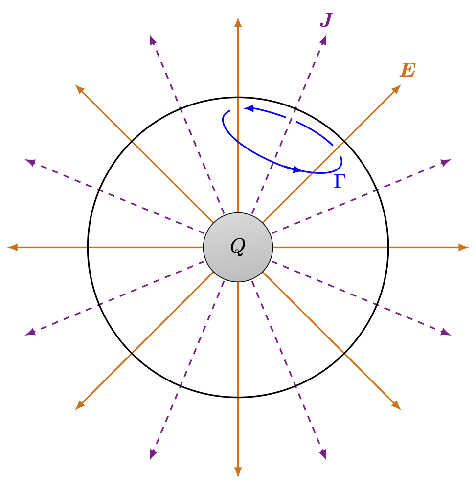
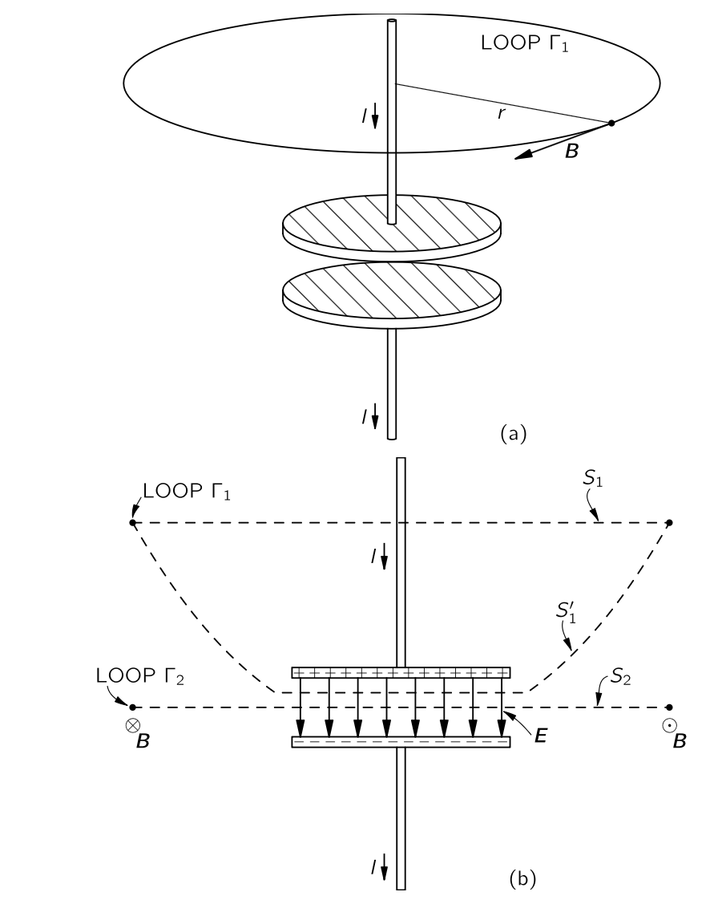
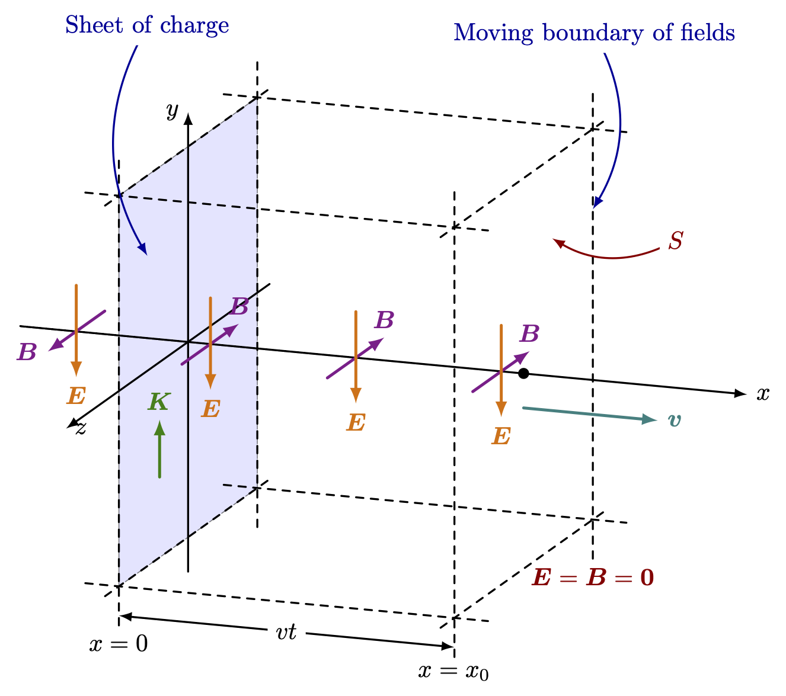
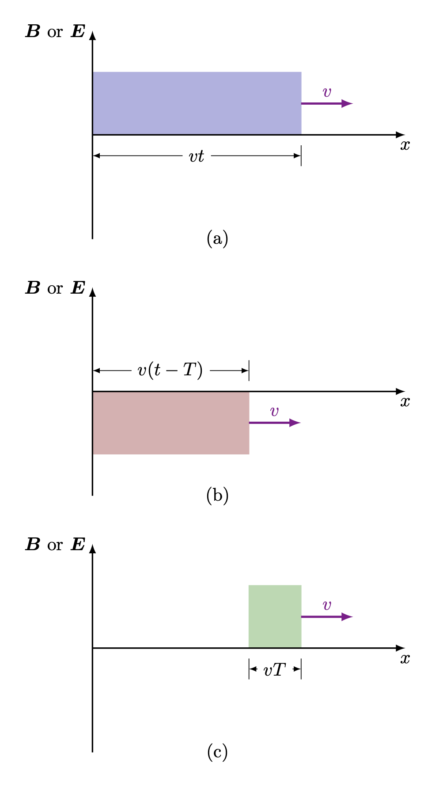
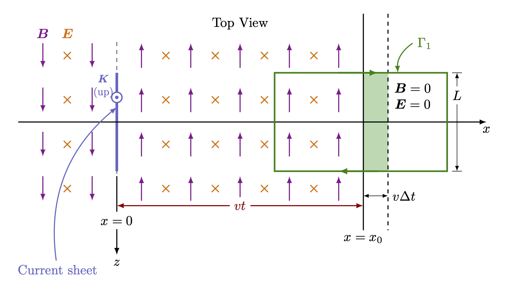
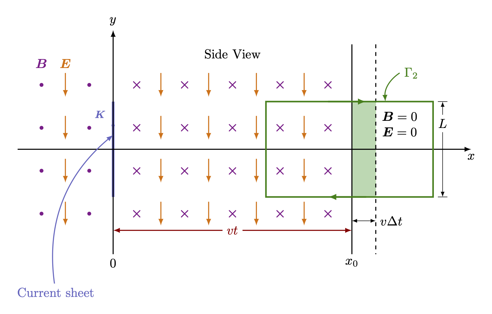
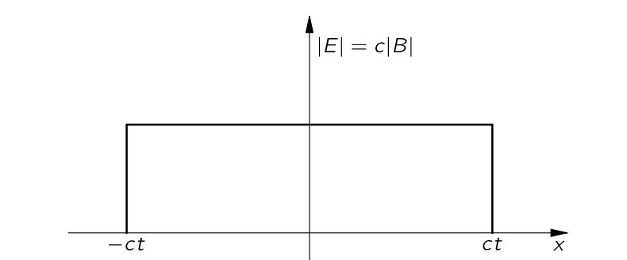
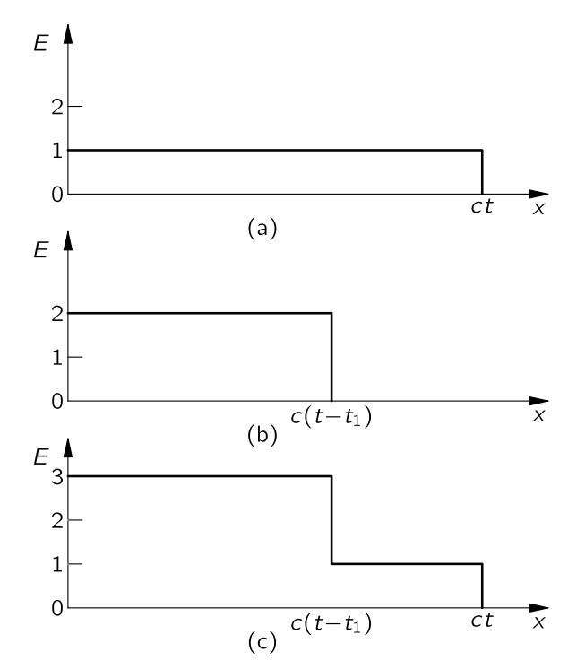
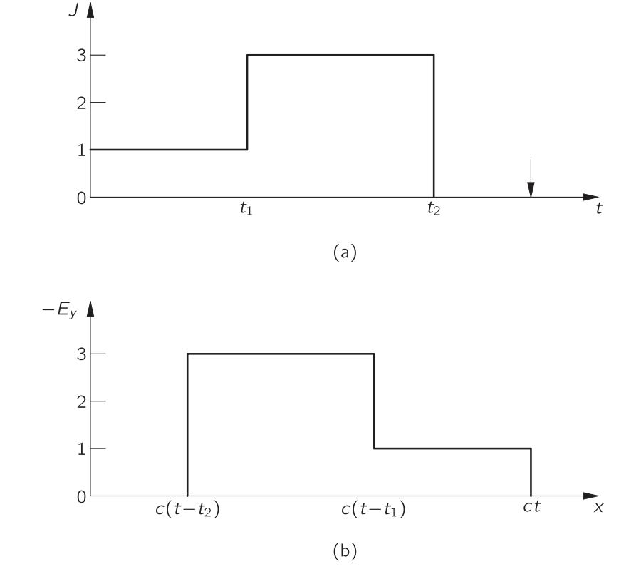
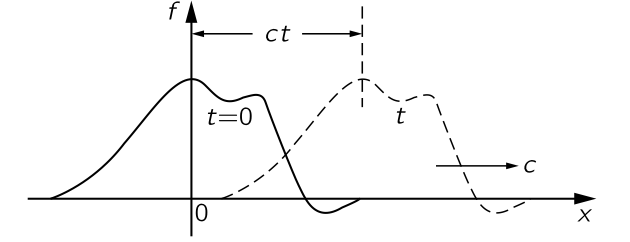

% %
%
\[ \DeclarePairedDelimiters{\set}{\{}{\}} \DeclareMathOperator*{\argmax}{argmax} \]
\(\textrm{II}\).18 멕스웰 방정식
\(\textrm{II}\).18-1 멕스웰 방정식
이제 네 개의 맥스웰 방정식 전체 집합을 다시 살펴본다. 지금까지는 맥스웰 방정식을 조각내어 공부했지만, 이제 마지막 한 조각을 추가하고 모두 합칠 때이다. 이를 통해 시간에 따라 어떤 방식으로든 변할 수 있는 전자기장에 대한 완전하고 정확한 이야기를 갖게 될 것이다. 이 장에서 앞서 말한 내용과 모순되는 내용이 나오더라도 사실이며 앞서 말한 내용은 틀린 것이다. 왜냐하면 앞서 말한 내용은 예를 들어 정상 전류나 고정 전하와 같은 특수한 상황에만 적용되기 때문이다. 이제 우리는 전체 진실을 볼 준비가 되었다. 아래에 멕스웰 방정식을 비롯한 고전 물리학의 중요한 방정식을 적었다.
맥스웰의 작업 이전까지, 알려진 전기와 자기의 법칙은 우리가 \(\textrm{II}.3\) 부터 \(\textrm{II}.17\) 까지 다룬 것들이었다. 특히, 정상 전류의 자기장에 대한 방정식은 단지
\[ \nabla \times \boldsymbol{B} = \mu_0 \boldsymbol{J} \tag{11.1}\]
로 알려져 있었다. 맥스웰은 여기서 우리가 한 것 같이 알려진 법칙들을 고려하고 이를 미분 방정식으로 표현하는것으로 시작했다. (비록 \(\nabla\) 표기법은 당시에 아직 발명되지 않았지만, 오늘날 우리가 컬과 발산이라고 부르는 미분의 조합의 중요성이 처음으로 드러난 것은 주로 맥스웰 덕분이다.) 그는 그 때 식 11.1 에 뭔가 이상한 점이 있다는 것을 알아차렸다. 이 방정식의 발산을 취하면, 왼쪽 항은 0 이 되며, 따라서 \(\boldsymbol{J}\) 의 발산도 0 이어야 한다. 하지만 \(\nabla \boldsymbol{\cdot J}=0\) 이면, 모든 닫힌 표면에서 전류의 총 흐름도 0 이 된다.
닫힌 표면에서 전류의 플럭스는 표면 내부의 전하가 감소하는 것으로 일반적으로 0 이 될 수 없다. 왜냐하면 우리는 전하가 한 장소에서 다른 장소로 이동할 수 있다는 것을 알고 있기 때문이다. 식
\[ \nabla \boldsymbol{\cdot J} = −\dfrac{\partial \rho}{\partial t} \tag{11.2}\]
은 거의 \(\boldsymbol{J}\) 의 정의가 되었다. 이 방정식은 전하가 보존된다는 매우 근본적인 법칙을 말한다. 전하의 흐름은 반드시 어떤 공급에서 나와야 합니다. 맥스웰은 이 어려움을 이해했으며, 식의 오른쪽에 \(\partial \boldsymbol{E}/\partial t\) 라는 항을 식 11.1 에 추가함으로써 이를 피할 수 있다고 제안했다. 그리고 다음 식을 얻었다.
\[ \nabla \times \boldsymbol{B}=\mu_0 \boldsymbol{J}+\dfrac{1}{c^2}\dfrac{\partial \boldsymbol{E}}{\partial t}. \]
\(\textrm{II}\).18-2 새로운 항은 어떻게 작동하는가?
예제 11.1 (구면 대칭 방사형 전류 분포) 첫 번째 예로서 우리는 구면 대칭 방사형 전류 분포에서 발생하는 현상을 생각해보자. 하전입자를 방출하는 구형 방사선 물질이 그럴 수 있다. 여기서는 모든 방향에서 전류밀도가 동일하다고 가정한다. 반지름 \(r\) 내부의 총 전하를 \(Q(r)\) 이라 하자. 원점으로부터의 거리 \(r\) 에서 방사형 전류 밀도를 \(J(r)\) 이라고 하면 전하 보존 법칙으로부터
\[ \dfrac{\partial Q(r)}{\partial t} = −4\pi r^2J(r) \tag{11.3}\]
을 얻는다. 이제 이 상황에서 전류가 생성하는 자기장에 대해 알아보자. 그림 11.1 과 같이 반지름이 \(r\) 인 구면에 루프 \(\Gamma\) 를 그려보자. 이 루프를 통과하는 전류밀도가 있으므로 순환하는 자기장이 존재할 것이라고 생각 할 수 있다.

하지만 \(\Gamma\) 를 달리 선택하면 이전의 자기장과 정확히 상쇄하도록 할 수 있다. 그렇다면 전류 주위에 \(\boldsymbol{B}\) 가 어떻게 순환할 수 있을까? 맥스웰 방정식이 우리를 구원한다. \(\boldsymbol{B}\) 의 순환은 \(\Gamma\) 를 통과하는 총 전류뿐만 이를 통과하는 전기 플럭스의 시간에 따른 변화율에도 의존한다. 이 두 부분이 서로 상쇄된 것이다. 이것을 확인해보자.
반지름 \(r\) 에서의 전기장은 전하가 대칭적으로 분포되어 있다고 가정하는 한 \(Q(r)/4\pi \epsilon_0 r^2\) 이며
\[ \dfrac{\partial E}{\partial t}=\dfrac{1}{4 \pi \epsilon_0 r^2}\dfrac{\partial Q}{\partial t} \tag{11.4}\]
이다. 이것을 식 11.3 와 비교하면
\[ \dfrac{\partial E}{\partial t} = −\dfrac{J}{\epsilon_0} \tag{11.5}\]
이다. 그렇다면 멕스웰 방정식 \(\textrm{IV}\) 에서 \(\nabla \times \boldsymbol{B}=\boldsymbol{0}\) 이다.
예제 11.2 (변위 전류)

평행판 충전기를 충전하는 데 사용되는 전선에서의 자기장을 생각하자(그림 11.2). 평행판의 전하 \(Q\) 가 시간에 따라 (너무 빠르지 않게) 변한다면, 전선의 전류는 \(dQ/dt\) 와 같고 이 전류는 전선 주위에 자기장을 발생시킨다.
그림의 (a) 처럼 반지름 \(r\) 인 원인 루프 \(\Gamma_1\) 을 생각하자. 그렇다면
\[ 2\pi r B= \mu_0 I \tag{11.6}\]
이다. 이것은 맥스웰의 덧셈에서도 올바르다. 왜냐하면 원 안의 평면 표면 \(S\) 를 고려하면 (전선이 매우 좋은 전도체라고 가정할 때) 그 위에 전기장이 없기 때문이며, \(\partial E/\partial t\) 의 표면 적분은 \(0\) 이다.
이제 우리는 곡선 \(\Gamma\) 를 천천히 아래로 이동한다고 해 보자. 축전지의 한 평행판과 겹치기 전까지 같은 결과를 얻게 된다. 그리고 나서 평행판을 지나면 \(I\) 는 \(0\) 이 된다. 자기장이 사라지나? 그것은 꽤 이상하다. 맥스웰 방정식이 곡선 \(\Gamma_2\) 에 대해 어떻게 말하는지 살펴보자. \(\Gamma_2\) 는 반지름 \(r\) 인 원이며, 그 평면이 축전지 판 사이를 통과한다. \(\boldsymbol{B}\) 의 \(\Gamma_2\) 주위 선적분은 \(2\pi rB\) 이며 이는 평면 원형 표면 \(S_2\) 를 통과하는 \(\boldsymbol{E}\) 의 플럭스의 시간 미분과 같아야 한다. 이 \(\boldsymbol{E}\) 의 플럭스는 가우스의 법칙으로부터 축전지 평행판 하나의 전하 \(Q\) 에 \(1/\epsilon_0\) 를 곱한 것과 같아야 한다. 다라서
\[ 2\pi r B =\mu_0\dfrac{dQ}{dt}. \tag{11.7}\]
이것은 식 11.6 과 동일한 결과이다. 변화하는 전기장을 적분하면 전선의 전류를 적분하는 것과 동일한 자기장이 되며 맥스웰 방정식이 말하는 그대로이다. 그림 11.2 (b)에서 동일한 원 \(\Gamma_1\) 을 경계로 갖는 두 표면 \(S_1\) 과 \(S'_1\) 에 동일한 논리를 적용함으로써 항상 그렇게 되어야 함을 알 수 있다. \(S_1\) 을 통과하는 전류 I가 존재하지만 전기 플럭스는 없다. \(S'_1\) 을 통과하는 전류는 없으며, \(I/\epsilon_0\) 의 속도로 변하는 전기 플럭스가 존재한다. 멕스웰 방정식을 사용하면 동일한 \(\boldsymbol{B}\) 를 얻는다.
\(\textrm{II}\).18-3 고전 물리학의 모든것
\(\textrm{II}\).18–4 장의 이동
그림 11.3 과 같은 상황을 생각하자. \(yz\)-평면에 대전된 전하 시트가 있다. 이 시트는 먼저 정지한 뒤, 즉시 \(y\) 방향으로 일정한 속도 \(u\) 로 움직인다. 이런 “무한” 가속을 걱정할 수도 있지만, 크게 중요하지는 않다. 속도가 매우 빠르게 전달된다고 가정한다. 어쨌든 갑자기 표면 전류 밀도 \(K\) 를 갖게 된다(\(K\) 는 \(z\) 방향으로의 단위 폭당 전류를 의미한다.). 문제를 간단히 하기 위해 우리는 \(yz\) 평면 위에 반대 부호를 가진 전하의 고정된 시트가 겹쳐져 있어 전기적 효과가 없다고 가정하자. 또한, 그림에서는 유한 영역에서 일어나는 일만을 보여주지만, 우리는 그 시트가 \(\pm y\) 와 \(\pm z\) 에서 무한대로 확장된다고 가정한다. 다시 말해, 전류가 없고 갑자기 균일한 전류 시트가 나타나는 상황이 있다. 무슨 일이 일어날 것인가?

\(+y\) 방향으로 움직이는 전류 시트가 있을 경우 \(x>0\) 인 경우 \(-z\) 방향으로, \(x<0\) 인 경우는 \(+z\) 방향으로 자기장이 생성된다. 우리는 자기장의 선적분이 \(\mu_0\) 와 전류의 곱이라는 사실을 이용하여 \(B=\mu_0 K/2\) 임을 알 수 있다.
이 자기장의 크기는 \(x\) 와 무관하다. 하지만, 이는 전류를 켜는 순간 자기장이 갑자기 0에서 모든 곳에서 유한한 값으로 변한다는 것을 의미한다. 그런데 자기장이 갑자기 변하면 엄청난 전기적 효과를 발생시킬 것이다. 즉 전하 시트를 이동으로 자기장이 생기고, 이 자기장의 생성으로 인해 전기장이 생긴다. 현재 \(K\) 와 함께 일부 \(\partial \boldsymbol{E}/\partial t\) 가 자기장 생성에 기여할 것이다. 따라서 다양한 방정식들을 통해 큰 혼합이 존재하며, 우리는 모든 장에 대해 한꺼번에 풀어야 한다.
맥스웰 방정식만을 살펴보는 것만으로는 해를 얻는 방법을 직접 확인하기가 쉽지 않다. 따라서 먼저 답을 제시하고, 그 다음에 그것이 실제로 멕스웰 방정식을 만족하는지 확인하도록 한다. 답은 다음과 같다: 우리가 계산한 필드 \(\boldsymbol{B}\) 는 실제로 현재 시트 바로 옆에, 즉 작은 \(|x|\) 에서 생성된다. 왜냐하면 시트 주위의 매우 작은 루프를 통과하는 전기 플럭스가 실질적으로 \(0\) 이기 때문이다\(^1\). 하지만 멀리 있는 필드 \(\boldsymbol{B}\) 는 처음에 \(\boldsymbol{0}\) 이다. 잠시 동안은 제로 상태를 유지한 뒤, 갑자기 켜진다. 요약하면, 전류를 켜고 그 바로 옆에 있는 자기장이 일정한 값 \(\boldsymbol{B}\) 로 켜지며 \(\boldsymbol{B}\) 는 점차 퍼져 나가게 된다. 일정 시간이 지나면, 어느 정도의 \(x\) 까지 모든 곳에 균일한 자기장이 존재하고, 그 이후에는 \(0\) 이 된다. 대칭성 때문에 \(+x\) 와 \(-x\) 방향 모두에 그러하다.

\(\boldsymbol{E}\) 도 같은 일을 한다. \(t=0\) 에 전류를 켰다면 이 때 전기장과 자기장은 모든 곳에서 \(\boldsymbol{0}\) 이다. 그리고 시간 \(t\) 이후에, \(\boldsymbol{E}\) 와 \(\boldsymbol{B}\) 는 모두 거리 \(x=vt\) 까지 일정하고 그 이후에는 \(\boldsymbol{0}\) 이 된다. 장들은 파도처럼 앞으로 나아가며, 전방이 균일한 속도 \(c\) 로 움직인다. 잠시 동안은 이를 \(v\) 라고 하자. 그림 11.4 (a) 는 \(x\) 에 대한 \(\boldsymbol{E}\) 또는 \(\boldsymbol{B}\) 의 크기를 보여준다. 그림 11.3 을 다시 살펴보면, 시점 \(t\) 에서 \(x=\pm vt\) 사이의 영역은 필드들로 “채워졌지만” 아직 그 너머에 도달하지 못했다. 다시 한 번 현재 시트와 따라서 \(\boldsymbol{E}\) 와 \(\boldsymbol{B}\) 가 \(y\) 와 \(z\) 방향 모두에서 무한히 확장된다고 가정하고 있음을 상기하자.

정량적으로 분석을 위해 두 시점에서 살펴보자. 그림 11.5 와 같이 \(y\) 축을 따라 아래를 바라보는 상단뷰와, 그림 11.6 에 표시된 바와 같이 \(z\) 축을 따라 뒤를 바라보는 측면뷰이다. 측면뷰에서 전하 시트는 위쪽으로 이동한다. 자기장은 \(+x\) 에 대해서는 페이지 안으로, \(−x\) 에 대해서는 페이지 밖으로 향하고, 전기장은 \(x=\pm vt\) 까지의 모든 위치에서 아래쪽을 향한다.

이 장들이 맥스웰 방정식과 일치하는지 살펴보자. 그림 11.6 의 \(\Gamma_2\) 경로를 보자. 이 경로 내부에 자기장이 존재하는 부분과 존재하지 않는 부분이 있으므로 시간에 대한 자기플럭스의 변화가 있고, 따라서 기전력 \(\mathcal{E}=vBL\) 이 발생한다. 이 기전력은 \(\Gamma_2\) 경로에 대한 전기장 \(\boldsymbol{E}\) 의 선적분이므로 전기장의 크기 \(E\) 는
\[ E=vB. \tag{11.8}\]
따라서 \(E\) 와 \(B\) 의 비율이 \(v\) 라면, 우리가 가정한 전기장과 자기장은 패러데이 방정식을 만족한다.
\(\boldsymbol{E}\) 와 \(\boldsymbol{B}\) 를 연결하는 다른 방정식이 있다.
\[ \nabla \times \boldsymbol{B}=\mu_0 \boldsymbol{J} + \dfrac{1}{c^2}\dfrac{\partial \boldsymbol{E}}{\partial t} \tag{11.9}\]
그림 11.5 의 상단뷰를 보자. 이 방정식은 시트 옆의 \(\boldsymbol{B}\) 값을 제시한다. 또한, 시트 외부에서 파면 뒤에 그려진 모든 루프에 대해, \(\nabla \times \boldsymbol{B}=\boldsymbol{0}\) 이며 \(\boldsymbol{J}=\boldsymbol{0}\) 이고 \(\partial \boldsymbol{E}/\partial t=\boldsymbol{0}\) 이므로 이 식을 만족한다. 이제 그림 11.5 와 같이 파면과 교차하는 곡선 \(\Gamma_1\) 에 대해 어떤 일이 일어나는지 살펴보자. 여기에는 전류가 없으니, 식 11.9 은 적분 형태로 아래와 같이 표현 될 수 있다.
\[ \oint_{\Gamma_1}\boldsymbol{B \cdot} d\boldsymbol{l} =\dfrac{1}{c^2}\dfrac{d}{dt}\int_{\text{inside }\Gamma_1} \boldsymbol{E \cdot}d\boldsymbol{a}. \tag{11.10}\]
위 적분의 좌변은 \(BL\) 이며 우변은 \(ELv\) 이므로
\[ B=\dfrac{Ev}{c^2}. \tag{11.11}\]
이제 서로 다른 맥스웰 방정식으로부터 두 조건 식 11.8 과 식 11.11 을 얻었다. 이 두 식이 모두 성립할 수 있는 속도 \(v\) 는 \(v=c\) 뿐이다. 즉 파면은 속도 \(c\) 로 이동해야 한다. 우리는 전류의 전기적 영향이 특정 속도 \(c\) 에서 전파되는 것을 보았다.
이제 짧은 시간 \(T\) 동안 전하 시트의 움직임을 갑자기 멈추면 어떤 일이 일어나는지 알아보자. 우리는 중첩 원리에 의해 어떤 일이 일어날지 알 수 있다. 전류가 0 이었다가 갑자기 켜진 것에 대한 것처럼 또 다른 필드 세트를 추가한다. 또 다른 전하 시트를 가져가서, 첫 번째 전류가 켜진 후 \(T\) 시점에서 같은 속도로 반대 방향으로 움직이기 시작하자. 두 전류를 더한 총 전류는 처음에 0이 되고, 그 다음 시간 \(T\) 가 켜지면 두 전류가 상쇄되기 때문에 전류가 \(0\) 이다. 이렇게 되면 우리는 전류의 정사각형 “펄스”를 가지게 된다.
새로운 음전류는 양전류와 동일한 장을 생성하며, 모든 부호가 뒤바뀌고 \(T\) 만큼 시간적으로 지연된다. 파면이 다시 속도 \(c\) 로 외부로 이동한다. \(T\) 가 거리 \(x=±c(t−T)\) 에 도달한 시점에, 그림 11.4 (b)와 같다. 따라서 그림 11.4 의 (a)와 (b) 같이 속도 \(c\) 로 전진하는 두 개의 “블록”이 있다. 합쳐진 장은 그림 11.4 (c) 에 표현된 대로이다. \(x>ct\) 인 경우 필드는 \(0\) 이며, \(x=c(t−T)\) 와 \(x=ct\) 사이에서는 상수이며, \(x<c(t−T)\) 인 경우 다시 \(0\) 이다.
정리하자면 우리는 현재 시트를 떠나 스스로 공간을 이동하고 있는 두께 \(cT\) 의 작은 장 블록을 보고 있다. 이 장들은 공간을 자유롭게 이동하고 있으며, 더 이상 소스과 어떠한 방식으로도 연결되어 있지 않다. 애벌레가 나비로 변한 것이다!
이 전기장과 자기장의 묶음은 어떻게 스스로 유지될 수 있는가? 답은 다음과 같다: 페러데이 법칙 \(\nabla \times \boldsymbol{E}=−\partial \boldsymbol{B}/\partial t\) 와 맥스웰의 새로운 항 \(\nabla \times \boldsymbol{B} = (1/c^2)\partial \boldsymbol{E}/\partial t\) 의 결합 효과. 그들은 스스로를 유지할 수 없다. 자기장이 사라진고 해 보자. 변화하는 자기장이 전기장을 생성한다. 이 전기장이 사라지려고 하면, 다시 자기장을 생성한다. 이 끊임없는 상호작용으로 인해 전기장과 자기장은 영원히 계속되어야 한다. 그들이 사라지는 것은 불가능하다\(^2\).
\(\textrm{II}\).18–5 빛의 속도
이제 물질로 된 원천을 떠나 빛의 속도 \(c\) 로 바깥쪽으로 향하는 파동을 알게 되었다. 하지만 잠시 과거로 돌아가 보자. 역사적 관점에서 볼 때, 맥스웰 방정식의 계수 \(c\) 가 빛의 전파 속도이기도 하다는 것은 알려져 있지 않았다. 방정식에 상수가 하나뿐이었다. 우리는 처음부터 그것을 \(c\) 라고 불렀는데 왜냐하면 그것이 무엇인지 알았기 때문이다. 우리는 다른 상수로 수식을 배우게 하고, 그 후에 \(c\) 로 대체하는 것이 현명하다고 생각하지 않았다. 전기와 자기 관점에서 보면, 우리는 전기정역학과 자기정역학 방정식에 나타나는 두 상수 \(\epsilon_0\) 와 \(c^2\) 부터 시작한다:
\[ \nabla \boldsymbol{\cdot E}=\dfrac{\rho}{\epsilon_0}, \tag{11.12}\]
그리고
\[ \nabla \times \boldsymbol{B}=\mu_0 \boldsymbol{J}. \tag{11.13}\]
전하 단위에 대한 임의의 정의를 취하면, 실험적으로 식 11.12 에 필요한 상수 \(\epsilon_0\) 를 결정할 수 있다. 우리는 또한 식 11.13 에 나타나는 상수 \(\mu_0 = 1/(\epsilon_0 c^2)\) 를 실험적으로 결정할 수 있다. 예를 들어, 두 단위 전류 사이의 힘을 측정하여. \(c^2=1/(\epsilon_0 \mu_0)\) 는 이를 통해 결정된다.
여기서 상수 \(c^2\) 는 우리가 전하 단위로 무엇을 선택하든 동일하다. 만약 우리가 “전하”의 두 배—예를 들어 양성자 전하의 두 배—를 전하의 단위로 삼는다면, \(\epsilon_0\) 는 \(1/4\) 로 줄어야 하며 두 전선 사이의 힘과 \(\mu_0\) 네 배 더 커진다. 따라서 \(c^2 = (1/\epsilon_0 \mu_0)\) 는 변하지 않는다.
따라서 전하와 전류에 대한 실험만으로 우리는 전자기 영향의 전파 속도의 제곱인 \(c^2\) 의 값을 얻게 된다. 정적 측정—두 단위 전하와 두 단위 전류 사이의 힘을 측정함으로써—우리는 \(c=3.00 \times 10^8\,\text{m/s}\) 임을 알게 된다. 맥스웰이 처음으로 자신의 방정식으로 이 계산을 했을 때, 그는 전기장과 자기장의 다발이 이 속도로 전파되어야 한다고 말했다. 그는 또한 이것이 빛의 속도와 동일하다는 신비로운 우연에 대해 언급했다. 맥스웰은 “빛이 전기와 자기 현상의 원인이 되는 동일한 매질의 횡방향 요동에 있다고 추론하지 않을 수 없다” 라고 말했다.
맥스웰은 물리학의 위대한 통합 중 하나를 만들었다. 그의 시대 이전에는 빛이 있었고, 전기와 자기가 있었다. 후자 두 개는 파라데이, 외르스테드, 그리고 앙페르의 실험에 의해 통합되었다. 그때 갑자기 빛은 더 이상 “다른 것”이 아니라, 이 새로운 형태의 전기와 자기에 불과했다—우주를 스스로 전파하는 전기와 자기장의 작은 조각들.
우리는 이 특수해의 몇 가지 특성에 주의를 환기했으며, 이는 모든 전자기파에 대해 사실이다: 전기장, 자기장, 파면의 운동 방향의 세 벡터의 두 쌍은 모두 수직이며 전기장 \(\boldsymbol{E}\) 의 크기는 \(c\|\boldsymbol{B}\|\) 와 같다. 이 세 가지 사실은 일반적으로 모든 전자기파에 대해 사실이다.
\(\textrm{II}\).18–6 멕스웰 방정식의 해 : 포텐셜과 파동방정식
여기서는 수학적인 작업을 통해 맥스웰 방정식을 더 간단한 형태로 표현할 것이다 .우선 가장 간단한 \(\nabla \times \boldsymbol{ B}=\boldsymbol{0}\) 부터 시작한다. 이 식은
\[ \boldsymbol{B} = \nabla \times \boldsymbol{A} \tag{11.14}\]
을 만족하는 벡터장 \(\boldsymbol{A}\) 가 존재한다는 것을 의미한다. 이렇게 맥스웰의 방정식 중 하나를 해결했다. 짚고넘어갈 것은 어떤 스칼라장 \(\Psi\) 에 대해 \(\boldsymbol{A}'=\boldsymbol{A}+\nabla \Psi\) 인 \(\boldsymbol{A}'\) 역시 동일한 물리를 제시한다는 것이다. 이미 다룬 적이 있다.
이제 페러데이 법칙 \(\nabla \times \boldsymbol{E}=-\partial \boldsymbol{B}/\partial t\) 을 보자. \(\boldsymbol{B}=\nabla \times \boldsymbol{A}\) 와 시간과 공간의 편미분 순서를 바꿀수 있다는 사실로부터 패러데이 법칙은 아래와 같이 쓸 수 있다.
\[ \nabla \times \left( \boldsymbol{E} + \dfrac{\partial \boldsymbol{A}}{\partial t}\right)=0. \tag{11.15}\]
이 식으로부터
\[ \boldsymbol{E}+\dfrac{\partial \boldsymbol{A}}{\partial t} = -\nabla \Phi \tag{11.16}\]
을 만족하는 스칼라장 \(\Phi\) 가 존재한다는 것을 안다. 이로부터 패러데이 법칙은 다음과 같이 쓸 수 있다.
\[ \boldsymbol{E}=−∇\Phi− \dfrac{\partial \boldsymbol{A}}{\partial t}. \tag{11.17}\]
이제 맥스웰 방정식 두 개를 풀었으며, 전자기장 \(\boldsymbol{E}\) 와 \(\boldsymbol{B}\) 를 기술하기 위해서는 네 개의 퍼텐셜 함수 \(\Phi,\,A_x,\,A_y,\,A_z\) 가 필요하다는 것을 알게 되었다.
\(\boldsymbol{A}\) 가 \(\boldsymbol{E}\) 의 일부와 \(\boldsymbol{B}\) 의 일부를 결정하게 되면, \(\boldsymbol{A}\to \boldsymbol{A}+\nabla \Psi\) 변환에 의해 어떻게 바뀌는가? 일반적으로, 우리가 특별한 조치를 취하지 않으면 \(\boldsymbol{E}\) 는 변하겠지만 특정 규칙에 따라 \(\boldsymbol{A}\) 와 \(\Phi\) 를 함께 바꾸면, \(\boldsymbol{E}\) 와 \(\boldsymbol{B}\) 에 영향을 주지 않는다. 이 규칙은 다음과 같다.
\[ \boldsymbol{A}'=\boldsymbol{A} + \nabla \Psi,\qquad \Phi' = \Phi − \dfrac{\partial \Psi}{\partial t}. \tag{11.18}\]
그렇다면 식 11.17 에서 얻어지는 \(\boldsymbol{E}\) 뿐만 아니라 \(\boldsymbol{B}\) 도 변하지 않는다.
예전에는 정적인 방정식을 다소 간단하게 만들기 위해 \(\nabla \boldsymbol{\cdot A}=0\) 을 선택지만 지금은 그렇게 하지 않고 다른 선택을 할 것이다. 이 선택의 이유가 명확해지면 그때 선택을 설명하도록 하자.
이제 남은 두 개의 맥스웰 방정식으로 돌아가며, 포텐셜과 소스 \(\rho\), \(\boldsymbol{J}\) 의 관계를 보자. \(\boldsymbol{J}\) 와 \(\rho\) 로부터 \(\boldsymbol{A}\) 와 \(\Phi\) 를 결정할 수 있다면, 언제든지 식 11.14 과 식 11.17 를 통해 \(\boldsymbol{E}\) 와 \(\boldsymbol{B}\) 를 얻을 수 있다.
식 11.17 를 \(\nabla \boldsymbol{\cdot E}=\rho/\epsilon_0\) 에 대입하면
\[ \nabla \boldsymbol{\cdot}\left(−\nabla \Phi−\dfrac{\partial \boldsymbol{A}}{\partial t}\right)=\dfrac{\rho}{\epsilon_0} \]
이며 이로부터
\[ -\nabla^2 \Phi - \dfrac{\partial }{\partial t}(\nabla \boldsymbol{\cdot A} ) = \dfrac{\rho}{\epsilon_0} \tag{11.19}\]
을 얻는다. 이 식은 \(\Phi\) 와 \(\boldsymbol{A}\) 를 소스와 연관시키는 방정식이다.
우리의 최종 방정식은 가장 복잡할 것이다. 우리는 네 번째 맥스웰 방정식을 다음과 같이 다시 쓰는 것으로 시작한다.
\[ \nabla \times \boldsymbol{B}−\dfrac{1}{c^2}\dfrac{\partial \boldsymbol{E}}{\partial t}=\mu_0\boldsymbol{J} \]
이제 식 11.14 과 식 11.17 를 사용하여 \(\boldsymbol{B}\) 와 \(\boldsymbol{E}\) 를 포텐셜로 대체한다.
\[ \nabla \times (\nabla \times \boldsymbol{A})−\dfrac{1}{c^2}\dfrac{\partial}{\partial t}\left(−\nabla \Phi -\dfrac{\partial \boldsymbol{A}}{\partial t}\right)=\mu_0 \boldsymbol{J}. \]
첫 번째 항에 항등식 \(\nabla \times (\nabla \times \boldsymbol{A}) = \nabla (\nabla \boldsymbol{\cdot A}) - \nabla^2\boldsymbol{A}\) 를 사용하면
\[ −\nabla^2\boldsymbol{A}+\nabla(\nabla\boldsymbol{\cdot A})+\dfrac{1}{c^2}\dfrac{\partial (\nabla \Phi)}{\partial t} + \dfrac{1}{c^2}\dfrac{\partial^2 \boldsymbol{A}}{\partial t^2} = \mu_0 \boldsymbol{J}. \tag{11.20}\]
이 된다.
이것을 풀기는 쉽지 않은데 다행히도 우리에게는 \(\nabla \boldsymbol{\cdot A}\) 를 임의로 선택할 자유가 있다\(^3\). 이를 이용하여 \(\boldsymbol{A}\) 와 \(\Phi\) 에 대한 방정식을 분리하되 같은 형태를 갖도록 할 것이다. 이제 \(\nabla \boldsymbol{\cdot A}\) 를 다음과 같이 놓자.
\[ \nabla \boldsymbol{\cdot A} =−\dfrac{1}{c^2}\dfrac{\partial \Phi}{\partial t} \tag{11.21}\]
이제 식 11.20 좌변의 중간의 두 항이 서로 상쇄되어 아래왁 같게 된다.
\[ \nabla^2\boldsymbol{A}−\dfrac{1}{c^2}\dfrac{\partial^2 \boldsymbol{A}}{\partial t^2}=−\mu_0 \boldsymbol{J}. \tag{11.22}\]
그리고 \(\Phi\) 에 대한 식 11.19 도 같은 형태가 된다.
\[ \nabla^2 \Phi − \dfrac{1}{c^2}\dfrac{\partial^2 \Phi}{\partial t^2} = −\dfrac{ρ}{\epsilon_0}. \tag{11.23}\]
맥스웰 방정식은 포텐셜 \(\Phi\), \(\boldsymbol{A}\) 에 대한 새로운 종류의 방정식, \(\Phi,\,A_x,\,A_y,\,A_z\) 에 대해 동일한 수학적 형태를 갖는 방정식을 제시했다. 이 방정식을 풀면, \(\nabla \times \boldsymbol{A}\) 와 \(−\nabla \Phi−\partial\boldsymbol{A}/\partial t\) 로부터 \(\boldsymbol{B}\) 와 \(\boldsymbol{E}\) 를 얻을 수 있다. 우리는 맥스웰 방정식과 정확히 동등한 전자기 법칙의 또 다른 형태를 얻었으며, 많은 경우에 이것들이 훨씬 더 다루기 쉽다.
우리는 이미 \(\textrm{I}\).47. 소리와 파동 에서 이런 형태의 방정식을 풀었다. 식 11.22 와 식 11.23 는 속도 \(c\) 로 3차원상에 퍼져나가는 파동의 방정식이다. 따라서 전하와 전류가 존재하지 않는 영역에서 방정식들의 해는 \(\Phi\) 와 \(\boldsymbol{A}\) 가 0이 되는 것이 아니다. (물론실 가능한 해 중의 하나이긴 하다.) 시간에 따라 변하지만 항상 속도 \(c\) 로 이동하는 \(\Phi\) 와 \(\boldsymbol{A}\) 의 집합이 있는 해가 존재한다. 장은 자유 공간에서 앞으로 전파된다.
변위전류에 대한 맥스웰의 새로운 항으로부터 우리는 \(\boldsymbol{A}\) 와 \(\Phi\) 를 이용하여 장 방정식을 간단한 형태로 작성할 수 있었으며, 전자기파가 존재함을 즉시 명확히 알 수 있게 되었다. 많은 실용적인 목적상, \(\boldsymbol{E}\) 와 \(\boldsymbol{B}\) 의 원래 방정식을 사용하는 것이 여전히 편리할 수 있다. 하지만 그들은 우리가 이미 등반한 산의 반대편에 있다. 이제 우리는 정상의 반대편으로 건너 갈 준비가 되었다. 모든 시야가 달라진다. 우리는 새로운 아름다운 풍경을 맞이할 준비가 되어 있다.
\(\textrm{II}\).20 자유공간에서의 멕스웰 방정식의 해
\(\textrm{II}\).20-1 자유공간에서의 파동 : 평면파
리뷰 : 전기장과 자기장의 전파
앞서 \(\textrm{II}\).18-4 장의 이동 에서 공부했던 \(y\) 방향으로 움직이는 무한한 전하 시트에서 전기장은 \(y\) 성분만, 자기장은 \(z\) 성분만 존재하며 그 크기 \(x<ct\)는 다음과 같다는 것을 알게 되었다.
\[ E_y = cB_z = - \dfrac{K}{2\epsilon_0 c}. \tag{11.24}\]
\(x>ct\) 인 영역에서는 \(\boldsymbol{E}=\boldsymbol{B}=0\) 이다. \(x<0\) 인 영역에서도 자기장의 방향이 역전되지만 크기는 동일하게 유지된다(그림 11.7). 시간이 지남에 따라 파면은 \(c\) 의 속도로 밖으로 진행한다.

이제 다음과 같은 사건이 발생했다고 하자. 잠시 동안 단위 강도 전류를 켜고, 갑자기 전류 강도를 세 단위로 증가시키며, 이후 일정하게 유지한다. 그렇다면 장은 어떻게 될까? 우선, \(t=0\) 에서 켜져 영원히 일정하게 유지되는 단위 강도 전류를 생각하자. \(x>0\) 에 대한 전기장은 그림 11.8 (a) 의 그래프와 같다. 다음으로, \(t=t_1\) 에 두 단위의 일정한 전류를 켜자. 이 경우 전기장은 이전보다 두 배 높지만, 그림 11.8 (b) 에 표시된 바와 같이 \(x\) 에서 거리 \(c(t−t_1)\) 만큼만 퍼진다. 이 두 해를 중첩 원리를 이용하여 더하면, \(t\) 시점에 필드는 그림 11.8 (c) 와 같다는 것을 알 수 있다.

이제 좀 더 복잡한 사건을 생각하자. 전류가 잠시 1단위로 켜졌다가 세 단위로 상승하고, 이후 0으로 꺼진다고 하자. 이제 세 개의 별개의 문제에 대한 해를 더하여 앞서와 같은 방식으로 각 단계마다 해를 찾고 이 세 개의 해를 더하면 그림 11.9 (b) 와 같이 나타난다는 것을 알 수 있다. 공간에서의 필드 분포는 시간에 따른 현재 변동을 잘 나타내는 그래프이며, 오직 거꾸로 그려져 있다. 시간이 흐를수록 전체 그림이 속도 \(c\) 로 바깥쪽으로 이동하고, 따라서 양의 \(x\) 를 향해 이동하는 작은 장의 뭉치가 있으며, 이는 현재 모든 변동의 역사를 완전히 상세히 기억하고 있다. 우리가 수 마일 떨어진 곳에 서 있다고 해도, 전기장이나 자기장의 변동을 통해 전류가 원천에서 어떻게 변했는지 정확히 알 수 있다.

또한, 소스에서의 모든 활동이 완전히 멈추고 모든 전하와 전류가 0이 된 후에도, 필드 블록이 계속해서 우주를 이동한다는 것을 알 수 있다. 우리는 전하나 전류와는 독립적으로 존재하는 전기장과 자기장의 분포를 갖게 된다. 그것은 맥스웰 방정식 전체 집합에서 나오는 새로운 효과이다. 주어진 위치와 주어진 시간에 있는 전기장이 소스의 \(t−x/c\) 만큼의 이전 시점에 비례한다.
\[ E_y(t)=−\mu_0 J(t−x/c) \tag{11.25}\]
우리는 이미 \(\mathrm{I}\).30. 회절 에서 다른 관점에서 동일한 방정식을 유도했다. 우리가 굴절률 이론을 다루고 있을 때. 그 후, 우리는 유입 전자기파의 전기장에 의해 움직이게 된 쌍극자와 함께, 유전체 재료 시트의 얇은 진동 쌍극자층에 의해 생성되는 전기장이 무엇인지 파악해야 했다. 이때의 문제는 원래 파동과 진동하는 쌍극자가 방사하는 파동의 결합장을 계산하는 것이었다. 맥스웰 방정식이 없었을 때 이동 전하에 의해 생성된 필드를 어떻게 계산할 수 있었까? 그때 우리는 (유도 없이) 가속점 전하로부터 멀리 떨어진 곳에서 발생하는 복사장에 대한 공식을 출발점으로 삼았다. \(\mathrm{I}\).30. 회절 의 식 4.37 는 식 11.25 과 동일하다. 우리의 이전 식은 원천으로부터 멀리 떨어진 곳에서만 정확했지만, 이제는 원천까지도 같은 결과가 계속 옳다는 것을 알게 되었다.
자유공간에서의 포텐셜과 장의 파동방정식
이제 전류와 전하와 같은 원천으로부터 멀리 떨어진 빈 공간에서 전기장과 자기장의 거동을 일반적인 방식으로 살펴보자. 원천에 매우 가까운\(^4\) 경우그 필드는 우리가 전기정전식 또는 자기정전식이라고 부르는 경우와 거의 동일하다. 하지만 지연이 중요해질 정도로 충분히 큰 거리를 이동한다면, 장의의 특성은 우리가 찾은 해과 크게 다를 수 있다. 어느 정도는, 모든 원천으로부터 크게 떨어진 장들이이 스스로의 특성을 띠기 시작한다. 따라서 전류나 전하가 없는 영역에서의 장의 거동을 논의하는것으로 시작하자.
질문 : \(\rho\) 와 \(\boldsymbol{J}\) 가 모두 0인 영역에서 어떤 종류의 장이 존재할 수 있는가? 우리는 앞서 멕스웰 방정식을 포텐살의 미분방정식으로 표현했다.
\[ \begin{aligned} \nabla^2 \Phi - \dfrac{1}{c^2}\dfrac{\partial^2 \Phi}{\partial t^2} &= - \dfrac{\rho}{\epsilon_0}, \\[0.3em] \nabla^2 \boldsymbol{A} - \dfrac{1}{c^2}\dfrac{\partial^2 \boldsymbol{A}}{\partial t^2} &= - \mu_0 \boldsymbol{J}. \end{aligned} \tag{11.26}\]
\(\rho\) 와 \(\boldsymbol{J}\) 가 모두 \(0\) 이면 위 식은 더 간단한 형태가 된다.
\[ \begin{aligned} \nabla^2 \Phi - \dfrac{1}{c^2}\dfrac{\partial^2 \Phi}{\partial t^2} &= 0, \\[0.3em] \nabla^2 \boldsymbol{A} - \dfrac{1}{c^2}\dfrac{\partial^2 \boldsymbol{A}}{\partial t^2} &= 0. \end{aligned} \tag{11.27}\]
\(\Phi,\,A_x,\,A_y,\,A_z\) 는 아래와 같은 형태의 방정식을 만족한다.
\[ \nabla^2 \psi - \dfrac{1}{c^2}\dfrac{\partial^2 \psi}{\partial t^2} = 0 \tag{11.28}\]
전기장 \(\boldsymbol{E}\) 와 자기장 \(\boldsymbol{B}\) 도 같은 형태의 방정식을 만족한다는 것을 보일 수 있다(연습문제 11.1).
\[ \begin{aligned} \nabla^2 \boldsymbol{E}-\dfrac{1}{c^2}\dfrac{\partial^2 \boldsymbol{E}}{\partial t^2} &= 0,\\[0.3em] \nabla^2 \boldsymbol{B}-\dfrac{1}{c^2}\dfrac{\partial^2 \boldsymbol{B}}{\partial t^2} &= 0. \end{aligned} \tag{11.29}\]
이제 모든 전자기장은 동일한 파동 방정식 식 11.28 을 만족한다는 것을 알게 되었다. 이 방정식에 대해 가장 일반적인 해는 구하기에 앞서 좀 더 쉽게 접근해 보자. 우선 장의 크기가 \(x\) 에만 의존하는 경우를 살펴보자. 그리고 이를 위해 우선 자유 공간에서의 멕스웰 방정식을 정리해보자.
장의 크기가 \(x\) 에만 의존하는 경우의 자유공간에서의 장
전기장이 \(y,\,z\) 에 독립적이라는 가정으로부터 \(\partial_y E_y = \partial_z E_z=0\) 이며 따라서 식 11.30 \(\textrm{I}\) 는 \(\partial_x E_x = 0\) 임을 의미한다. 또한 식 11.30 \(\textrm{IV}\) 로부터
\[ \dfrac{\partial B_z}{\partial y}- \dfrac{\partial B_y}{\partial z}= - \dfrac{1}{c^2}\dfrac{\partial E_x}{\partial t} \]
이며 좌변이 \(0\) 이므로 \(\partial E_x/\partial t = 0\) 을 얻는다. 즉 \(E_x\) 는 상수이다. 우리는 변화하는 장에만 관심이 있으므로 \(E_x=0\) 으로 놓아도 된다. 그렇다면 우리는 평면파가 어떤 방향으로 전파될 때 전기장이 전파 방향에 직각이어야 한다는 중요한 결과를 얻었다. 물론 좌표 \(x\) 에 대해 여전히 복잡한 방식으로 변할 수 있다. 이제 우리는 \(E_y(x,\,t),\, E_z(x,\,t)\) 에 대해 생각 할 수 있다. 우선 \(\boldsymbol{E}(x,\,t) = E_y(x,\,t)\hat{\boldsymbol{y}}\) 인 경우를 생각해 보자.
식 11.30 \(\textrm{II}\) 로부터
\[ \dfrac{\partial E_y}{\partial x} = -\dfrac{\partial B_z}{\partial t},\quad \dfrac{\partial B_x}{\partial t}= \dfrac{\partial B_y}{\partial t}=0 \]
을 얻는다. 식 11.30 \(\textrm{III}\) 으로부터
\[ \dfrac{\partial B_x}{\partial x}=0 \]
이다. 따라서 \(\partial B_x/\partial t = \partial B_x/\partial x = 0\) 이므로 \(B_x\) 는 상수이다. 따라서 앞서 \(E_x\) 와 같이 \(B_x=0\) 으로 생각 할 수 있다. 이제 식 11.30 \(\textrm{IV}\) 로부타
\[ \dfrac{\partial B_z}{\partial x} = - \dfrac{1}{c^2}\dfrac{\partial E_y}{\partial t}, \quad \dfrac{\partial B_y}{\partial x}=0 \]
을 얻는다. 역시 \(\partial B_y/\partial x = \partial B_y/\partial t=0\) 이므로 \(B_y=\text{constant}\) 이며 앞서와 같이 \(B_y=0\) 으로 놓자. 그렇다면 우리는
\[ \dfrac{\partial E_y}{\partial x}=- \dfrac{\partial B_z}{\partial t},\qquad \dfrac{\partial B_z}{\partial x}= - \dfrac{1}{c^2}\dfrac{\partial E_y}{\partial t} \]
를 얻고 이로부터
\[ \begin{aligned} \dfrac{\partial^2 E_y}{\partial x^2} - \dfrac{1}{c^2}\dfrac{\partial^2 E_y}{\partial t^2} &=0, \\[0.3em] \dfrac{\partial^2 B_z}{\partial x^2} - \dfrac{1}{c^2}\dfrac{\partial^2 B_z}{\partial t^2} &=0. \end{aligned} \tag{11.31}\]
이라는 파동방정식을 얻게 된다. 이 식은 식 11.29 의 첫번째 식과 거의 동일하지만 유도 과정에서 우리는 전기장과 자기장의 방향은 빛의 진행 방향과 직각이다 라는 사실을 알게 되었다.
1차원 파동방정식의 해
\(\psi\) 가 아래의 1차원 파동방정식을 만족한다고 하자.
\[ \dfrac{\partial^2 \psi}{\partial x^2} - \dfrac{1}{c^2}\dfrac{\partial^2 \psi}{\partial t^2} =0. \tag{11.32}\]
앞서 배웠듯이 \(\psi(x,\,t)\) 는 \(f(x-ct)\) 와 \(g(x+ct)\) 의 합으로 표현 할 수 있다.
\[ \psi (x,\,t) = f(x+ct) + g(x-ct). \tag{11.33}\]
함수 \(f(x-ct)\) 속력 \(c\) 로 \(+x\) 방향으로 이동하는 “강체” 패턴을 보인다.(그림 11.10) 예를 들어, 함수 \(f(s)\) 가 \(s=0\) 일 때 최대값을 가진 가진다면, \(\psi\) 는 \(t=0\) 일 때 \(x=s\) 에서 최대값을 가지며, \(t=10\) 이라면 \(x=10c\) 에서 최대값을 가진다. 시간이 흐를수록, 최대값은 속도 \(c\) 로 \(+x\) 방향으로 이동한다. \(g(x+ct)\) 는 반대로 속력 \(c\) 로 \(-x\) 방향으로 진행한다\(^5\).

이로부터 우리는 \(E_y\) 와 \(B_z\) 가 모두 식 11.33 형태의 파동방정식으로 표현될 수 있다는 것을 안다.
전자기파의 편광
앞서에서는 \(\boldsymbol{E}=E_y\hat{\boldsymbol{y}},\, \boldsymbol{B}=B_z\hat{\boldsymbol{z}}\) 인 경우를 다루었다. 그러나 \(+x\) 혹은 \(-x\) 방향으로 이동하는 파동에 대해 \(\boldsymbol{E}=E_y\hat{\boldsymbol{y}}+E_z\hat{\boldsymbol{z}}\) 와 \(\boldsymbol{B}=B_y\hat{\boldsymbol{y}}+B_z\hat{\boldsymbol{z}}\) 형태의 전자기장도 가능하다. 이 경우
\[ \begin{aligned} \boldsymbol{E} &= (0,\,E_y,\,E_z), \\[0.3em] E_y(x,\,t) &= f(x-ct) + g(x+ct), \\[0.3em] E_z(x,\,t) &= F(x-ct) + G(x+ct), \\[0.3em] \boldsymbol{B} &= (0,\, B_y,\,B_z), \\[0.3em] B_y(x,\,t) &= \dfrac{1}{c} \left[-F(x-ct)+G(x+ct)\right] , \\[0.3em] B_z (x,\,t)&= \dfrac{1}{c}\left[f(x-ct)-g(x+ct)\right]. \end{aligned} \]
형태의 해가 가능하다. 이러한 전자기파에서 \(\boldsymbol{E}\) 는 \(yz\) 평면에서 임의의 방식으로 회전하며, 모든 지점에서 자기장은 항상 전기장 및 전파 방향에 수직이다.
만약 파동이 한 방향으로만 이동하는 경우 전기장과 자기장의 상대적 방향을 알려주는 간단한 규칙이 있다. 규칙은 교차곱 \(\boldsymbol{E}\times \boldsymbol{B}\) 의 방향이 파동이 진행하는 방향이라는 것이다. 우리는 나중에 벡터 \(\boldsymbol{E}\times \boldsymbol{B}\) 가 특별한 물리적 의미-전자기장 내 에너지 흐름-를 표현한다는 것을 알게 될 것이다.
\(\textrm{II}\).20–2 3차원 파동
이제 삼차원에서 파동방정식을 얻자. 시작은
\[ \nabla \times \boldsymbol{E} = −\dfrac{\partial \boldsymbol{B}}{\partial t} \]
이다. 양쪽의 컬을 취하면
\[ \nabla \times (\nabla \times \boldsymbol{E}) = −\dfrac{\partial (\nabla \times \boldsymbol{B})}{\partial t} \tag{11.34}\]
이다. 벡터 항등식 (연습문제 38.2)
\[ \nabla \times (\nabla \times \boldsymbol{E}) = \nabla (\nabla \boldsymbol{\cdot E}) − \nabla^2 \boldsymbol{E} \]
에서 우리가 생각하는 자유공간의 경우 \(\nabla \boldsymbol{\cdot E}= 0\) 이므로 식 11.34 의 좌변은 \(-\nabla^2\boldsymbol{E}\) 가 된다. 또한, 자유 공간에서의 맥스웰 방정식 식 11.30 \(\textrm{IV}\) 로부터 식 11.34 의 우변은 \((1/c^2)(\partial^2\boldsymbol{E}/\partial t^2)\) 가 된다. 이를 정리하면 아래와 같이 \(\boldsymbol{E}\) 에 대한 파동방정식을 얻는다. 그리고 비슷한 방법으로 \(\boldsymbol{B}\) 에 대한 파동방정식도 얻을 수 있다.
\[ \begin{aligned} \nabla^2 \boldsymbol{E}- \dfrac{1}{c^2}\dfrac{\partial^2 \boldsymbol{E}}{\partial t^2} = 0, \\[0.3em] \nabla^2 \boldsymbol{B}- \dfrac{1}{c^2}\dfrac{\partial^2 \boldsymbol{B}}{\partial t^2} = 0. \end{aligned} \tag{11.35}\]
\(\textrm{II}\).20-3 과학적 상상력
\(\textrm{II}\).20-4 구면파
우리는 평면파에 해당하는 파동 방정식의 해가 존재한다는 것을 확인했으며, 모든 전자기파는 여러 평면파의 중첩으로 설명될 수 있음을 확인했다. 그러나 특정한 특수한 경우에는 파동장을 다른 수학적 형태로 설명하는 것이 더 편리하다. 우리는 이제 구형 파동 이론에 대해 알아보자. 구면파는 어떤 중심에서 퍼져 나가는 구형 표면에 해당한다. 구면파는 구면좌표계에서 다루는 것이 편리하다.
연습문제
연습문제 11.1 (전기장, 자기장의 파동방정식) 식 11.27 로부터 식 11.29 을 유도한다.
(\(a\)) 우선 벡터포텐셜 \(\boldsymbol{A}\) 와 자기장 \(\boldsymbol{B}\) 에 대해 다음이 성립함을 보여라.
\[ \nabla \times (\nabla^2 \boldsymbol{A})= \nabla^2 \boldsymbol{B} \tag{11.36}\]
(\(b\)) (\(a\)) 의 결과를 이용하여 식 11.29 의 두번째 식이 성립함을 보여라.
(\(c\)) (\(a\)) 와 (\(b\)) 의 결과를 이용하여 식 11.29 의 첫번째 식이 성립함을 보여라.
(해답). (\(a\)) \({}[\nabla \times (\nabla^2 \boldsymbol{A})]_i =\varepsilon_{ijk} \partial_j \partial_l^2 A_k = \partial_l^2 \varepsilon_{ijk} \partial_j A_k = \nabla^2 (\nabla \times \boldsymbol{A})_i = \nabla^2 B_i\)
(\(b\)) 식 11.29 의 두번째 식에 컬을 취하면
\[ \nabla^2 (\nabla \times \boldsymbol{A})- \dfrac{1}{c^2}\dfrac{\partial^2 (\nabla \times \boldsymbol{A})}{\partial t^2} = 0 \]
이며 \(\boldsymbol{B}=\nabla \times \boldsymbol{A}\) 이므로 식 11.29 의 두번째 식이 성립한다.
(\(c\)) \(\boldsymbol{E}=-\nabla \Phi - \dfrac{\partial \boldsymbol{A}}{\partial t}\) 이므로
\[ \begin{aligned} \nabla^2 E_i - \dfrac{1}{c^2}\dfrac{\partial^2 E_i}{\partial t^2} &= -\nabla^2 (\partial_i \Phi + \partial_t A_i) + \dfrac{1}{c^2} \partial^2_t(\partial_i \Phi + \partial_t A_i) \\[0.3em] &= -\partial_i \underbrace{\left(\nabla^2 \Phi - \dfrac{1}{c^2} \partial^2_t \Phi\right)}_{=0} - \partial_t \underbrace{\left(\nabla^2 A_i - \dfrac{1}{c^2} \partial^2_t A_i\right)}_{=0} \\[0.3em] &= 0 \end{aligned} \]